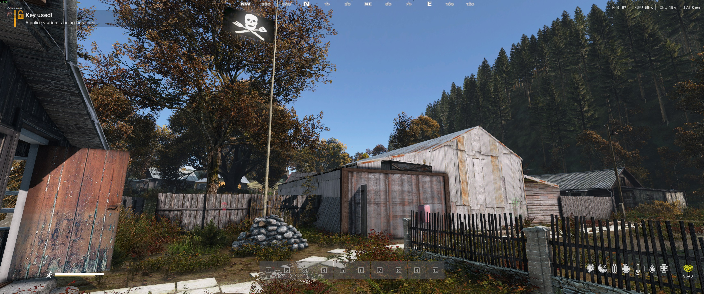
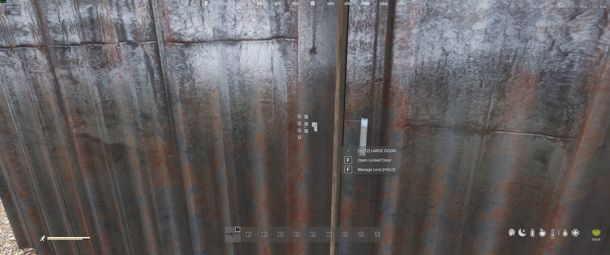
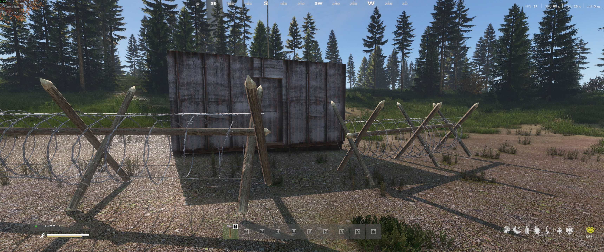

Base Building¶
Learn how to establish and defend your base on Survivatorium. We use a combination of BaseBuildingPlus and the Expansion territory system to give you the freedom to build the ultimate stronghold.
Table of Contents¶
- Territory System
- Crafting & Workbenches
- BaseBuildingPlus
- Code Locks
- Raiding Mechanics
- Base Defense Tips
- Building Rules
Territory System¶
Before you can start building your fortress, you need to claim the land. Territories define your safe zone and control who is allowed to build within your area.
Territory Limits¶
- Territory Radius: 60 meters
- Max Members: 5 players per territory
- Max Territories: 1 per player
Creating a Territory¶
- Craft or find a Territory Flag Kit.
- Place the flag where you want the center of your base to be.
- Raise the flag and name your territory.
- Invite your friends via the territory menu.

Territory Management¶
- Inviting Members: Your friends must be within the 150m radius to accept your invite (invite range is separate from territory size).
- Permissions: Only territory members can build or dismantle structures within the radius.
- Important: Code locks do NOT automatically authenticate territory members. You still need to share your door codes with your group!
Crafting & Workbenches¶
Survivatorium features an advanced crafting system that goes beyond the vanilla DayZ mechanics.
The Crafting Menu (F9)¶
Press F9 to open the custom crafting menu. This is your starting point for advanced survival. From here, you can craft essential tools and your first Workbench.
The Workbench¶
Once you've crafted and placed a Workbench, you unlock a whole new tier of recipes. - Base Building Parts: Craft the specialized components needed for BaseBuildingPlus structures. - Ammunition: Press your own ammo to keep your weapons fed. - Upgrades: The Workbench can be upgraded to unlock even more advanced recipes. - Consumables: Keep an eye out for consumable items that might be required for high-tier crafting.
BaseBuildingPlus¶
BaseBuildingPlus (BBP) gives you the tools to build everything from a simple wooden shack to a massive concrete bunker.
Getting Started with BBP¶
Once you have your Workbench set up and your BBP parts crafted, you'll need the right tools: - Hammer or Sledgehammer - Nails - Planks, Logs, or Metal Plates (depending on the tier)
Building Tiers¶
- Wood: The easiest to gather, but the weakest against explosives.
- Concrete: Highly durable, requires cement and a concrete mixer.
- Metal: The ultimate protection, requiring sheet metal and specialized tools.
Structure Types¶
- Foundations & Floors: Establish a flat surface on uneven terrain.
- Walls & Half-Walls: Create your perimeter and internal rooms.
- Doors & Gates: Secure your entrances.
- Defenses: Sandbags, barbed wire, and watchtowers to repel attackers.
Code Locks¶
Code locks are essential for securing your base doors and high-tier storage containers.

Setting Up Code Locks¶
- Attach the code lock to a compatible door, gate, or storage container.
- Set your 4-digit PIN.
- Remember your code! Lost codes cannot be recovered by admins.
- Share the code with your trusted group members.
Security Tips¶
- Use different codes for your outer gates and inner loot rooms.
- Change your codes periodically if you suspect someone might have learned them.
- Avoid obvious codes like 1234 or 0000.
Raiding Mechanics¶
Survivatorium is a dangerous place. Bases can be raided 24/7, meaning you must always be prepared to defend your loot.
Breaching Charges¶
Standard melee tools won't get you through a reinforced BBP wall. To raid a base, you will need Breaching Charges. - Finding Charges: Breaching charges and their components are rare and highly sought after. Look for them in high-tier military zones, KeyRooms, or Airdrops. - Planting: Attach the charge to the door or wall you want to destroy. - Detonation: Stand back! The explosion will destroy the structure, granting you access to the base.
Other Raiding Tools¶
While walls require explosives, some smaller obstacles can be bypassed with the right tools: - Safes & Containers: Can sometimes be cracked open using a Propane Torch, though it takes a significant amount of time and fuel. - Barbed Wire: Can be cut using Bolt Cutters.
Note: Standard locks on walls and fences cannot be picked or sawed off. You must blow the door off its hinges!
Base Defense Tips¶

Layer Your Defense¶
- Outer Perimeter: Use barbed wire and natural obstacles to slow down attackers.
- Multiple Doors: Don't rely on a single gate. Build "airlocks" with multiple locked doors to force raiders to use more explosives.
- Mix Materials: Upgrade your most vulnerable walls to concrete or metal as soon as possible.
Smart Storage¶
- Don't keep all your high-tier loot in one room.
- Use secure containers (like safes or MMG lockers) and attach code locks to them for an extra layer of security.
Building Rules¶
To keep the server fair and performant, please adhere to the following rules: - No building within 500m of Military areas, Hospitals, Quest Entrances, or Mount Sage. - Bases must be realistic. No floating or "sky" bases. - Do not block public roads, bridges, or water wells. - Maximum 2 bases per faction/group. - No Grief Raiding: Take what you need, but do not destroy a base purely out of spite.
Violating these rules may result in your base being deleted by the admin team.